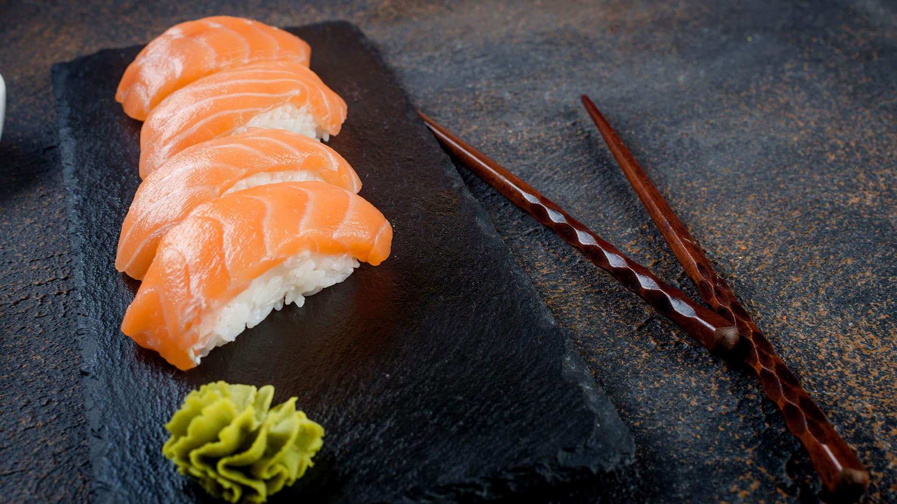

Ingrediënten
- 1 1/2 kop (320 g) Calrose rijst (sushi rijst)
- 1 3/4 kop (430 ml) water
- 1 theelepel zout
- 3 theelepels (45 ml) rijst azijn
- 1 theelepel suiker
- 1 sushi kwaliteit zalm steak, ongeveer 1 lb (450g)
- 1 theelepel (5 ml) wasabi
- Soya saus voor sushi en sashimi, om te proeven
- gepekelde gember
bereidingswijze
- Bedek de rijst in een kom met koud water. Spoel de rijst totdat het water troebel wordt. Giet af en herhaal 4 tot 5 keer of totdat het water helder is. Laat de rijst in een zeef totdat deze goed is uitgelekt.
- Breng in een pan op hoog vuur de rijst, het water en het zout aan de kook. Dek af en kook op laag vuur gedurende 15 minuten of tot de vloeistof volledig is opgenomen. Haal van het vuur en laat afgedekt 10 minuten rusten.
- Verwarm ondertussen in een kleine steelpan op middelhoog vuur de azijn en suiker zachtjes tot de suiker is opgelost.
- Spreid de gekookte rijst uit op een bakplaat en giet het azijnmengsel eroverheen. Meng voorzichtig om de rijstkorrels te coaten en te scheiden. Spreid de rijst weer uit en dek af met plasticfolie. Laat iets afkoelen.
- Snijd met een scherp mes de verkleurde delen van de zalm in stukken en gooi ze weg. Terwijl u het mes in een hoek van 30° houdt, snijdt u de vis fijn tegen de draad in om plakken van 10 cm lang te verkrijgen (zie opmerking). Zet apart op een koud bord of zet in de koelkast terwijl je de rijstballetjes vormt.
- Vorm met licht bevochtigde handen de rijst in langwerpige ballen van 2 1/2 inch (6 cm) en gebruik 2 eetlepels rijst voor elk. Smeer naar smaak een kleine hoeveelheid wasabi op elke rijstbal en bedek met een plakje zalm (zie opmerking).
- Serveer met de sojasaus en ingemaakte gember.

tipDeze smakelijke nigiri zijn leuk om thuis te maken en kosten een stuk minder dan restaurantsushi.